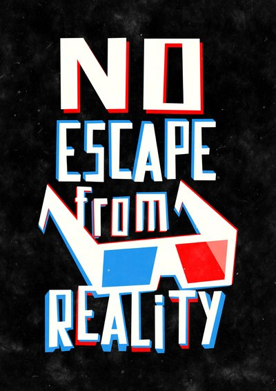

At first, it seems to work. People are healthy and well educated. Crime is almost non-existent. But my citizens are insatiable consumers, infuriated by the boredom of a good quality of life, and it doesn’t take long for them to balk at my pious, dematerialistic policies. I get complaints that “there’s nothing to do at weekends”. The blue bar, showing demand for commercial space, fills to the top. The game lectures me: “People want places to shop and enjoy themselves. ”I’m tempted to placate them with a “Statue of Shopping”.Instead, I invest more in public services. I build high schools, fire stations and bus routes. I plant trees on every street and put public spaces in every district. The logic of
the game quantifies the benefits of this public infrastructure through private interests: “Parks and plazas raise the value of land around them, making citizens happy”. It also calculates infrastructure as a liability, which starts adding zeros to the expenses column of my budget. I’m soon pushing taxes up to 14% to balance the books, but this causes people to leave town in droves, shrinking my tax base and leaving behind vacant buildings.At first, it seems to work. People are healthy and well educated. Crime is almost non-existent. But my citizens are insatiable consumers, infuriated by the boredom of a good quality of life, and it doesn’t take long for them to balk at my pious, dematerialistic policies. I get complaints that “there’s nothing to do at weekends”. The blue bar, showing demand for commercial space, fills to the top. The game lectures me: “People want places to shop and enjoy themselves. ”I’m tempted to placate them with a “Statue of Shopping”.Instead, I invest more in public services. I build high schools, fire stations and bus routes. I plant trees on every street and put public spaces in every district. The logic of the game quantifies the benefits of this public infrastructure through private interests: “Parks and plazas raise the value of land around them, making citizens happy”. It also calculates infrastructure as a liability, which starts adding zeros to the expenses column of my budget. I’m soon pushing taxes up to 14% to balance the books, but this causes people to leave town in droves, shrinking my tax base and leaving behind vacant buildings.